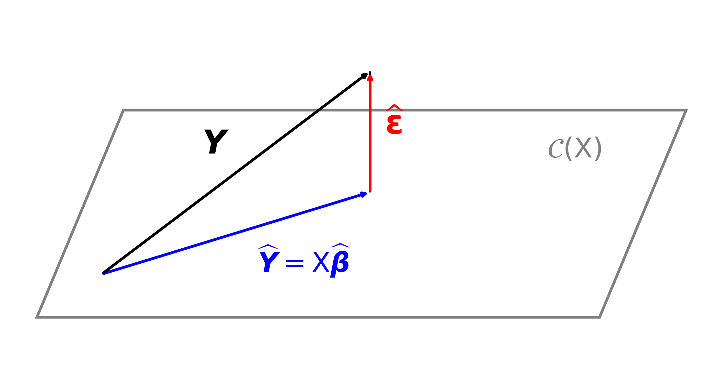

Linear Models
Casella & Berger Ch. 11
March 23, 2026
Now we move the situation where we have a
Response/Output/Dependent Variable \(Y\)
Explained/Predicted by a vector of Predictors/Explanatory Variables/Inputs/Indpendent Variables \(\vx\), where the \(x_j\) may be functions of other variables or each other
Types of linear models
Ordinary least squares (OLS) \(Y = \vx^\top \vbeta + \varepsilon\) with \(\varepsilon \sim (0,\sigma^2)\)
Analysis of variance (ANOVA) \(Y = \vx^\top \vbeta + \varepsilon\) with \(\varepsilon \sim (0,\sigma^2)\)
Logistic regression and other generalized linear models
Gaussian process regression
| Linear models | Population parameters | |
|---|---|---|
| Model | \(Y = \vx^\top \vbeta + \varepsilon\) \(\Ex(Y) = \vx^\top \vbeta\) |
\(Y \sim \Bern(p)\), \(Y \sim \Exp(\lambda)\), \(Y \sim \Norm(\mu,\sigma^2)\), … |
| Parameters | \(\vbeta \in \reals^d\) | \(\mu\), \(\sigma^2\), \(p\), \(\lambda\) |
| Fixed | \(\vx\) | |
| Random | \(Y\), \(\varepsilon\) | \(Y\) |
| Data | \((\vx_1,Y_1),\dots,(\vx_n,Y_n)\) | \(Y_1,\dots,Y_n\) |
| Model with data | \(Y_i = \vx_i^\top \vbeta + \varepsilon_i\) \(\underbrace{\vY}_{n \times 1} = \underbrace{\mX}_{n \times d}\, \underbrace{\vbeta}_{d \times 1} + \underbrace{\vveps}_{n \times 1}\) |
\(Y_i \sim \Bern(p)\), \(Y_i \sim \Exp(\lambda)\), \(Y_i \sim \Norm(\mu,\sigma^2)\), … |
| Not observable | \(\varepsilon_1,\dots,\varepsilon_n\) | |
| Point estimators | \(\hbeta = (\mX^\top \mX)^{-1} \mX^\top \vY\), \(\hvY = \mX \hbeta\) | \(\barY\), \(S^2\), \(\hlambda_{\MLE}\), \(\hp_{\MLE}\), … |
| Confidence/prediction regions for | \(\vbeta\), \(\Ex(Y \mid \vx)\), \(Y \mid \vx\) | \(\mu\), \(\sigma^2\), \(p\), \(\lambda\), \(Y\) |
Model: \(Y = \vx^\top \vbeta + \varepsilon \qquad\) with \(\Ex(\varepsilon)=0, \quad \var(\varepsilon)=\sigma^2\)
Model with data: \(\displaystyle \overbrace{\begin{pmatrix}Y_1 \\ Y_2 \\ \vdots \\ \vdots \\ Y_n\end{pmatrix}}^{\vY} = \overbrace{\begin{pmatrix} x_{11} & x_{12} & \cdots & x_{1d} \\ x_{21} & x_{22} & \cdots & x_{2d} \\ \vdots & \vdots & \ddots & \vdots \\ \vdots & \vdots & \ddots & \vdots \\ x_{n1} & x_{n2} & \cdots & x_{nd} \end{pmatrix}}^{\mX}\, \overbrace{\begin{pmatrix} \beta_1 \\ \beta_2 \\ \vdots \\ \beta_d \end{pmatrix}}^{\vbeta} + \overbrace{\begin{pmatrix} \varepsilon_1 \\ \varepsilon_2 \\ \vdots \\ \vdots \\ \varepsilon_n \end{pmatrix}}^{\vveps}\)
\[ \argmin_{\vb \in \reals^d} \lVert \vY - \mX \vb \rVert^2 = (\mX^\top \mX)^{-1} \mX^\top \vY =: \hvbeta \]
Let \(\hvbeta\) be defined as above, and let \(\vb\) be any other vector in \(\reals^d\): \[\begin{align*} \lVert \vY - \mX \vb \rVert^2 & = \lVert (\vY - \mX \hvbeta) + \mX (\hvbeta - \vb) \rVert^2 \\ & = \lVert \vY - \mX \hvbeta \rVert^2 + 2 (\hvbeta - \vb)^\top \class{alert}{\mX^\top (\vY - \mX \hvbeta)} + \lVert \mX (\hvbeta - \vb) \rVert^2 \\ & = \lVert \vY - \mX \hvbeta \rVert^2 + 2 (\hvbeta - \vb)^\top \class{alert}{\mX^\top (\vY - \mX (\mX^\top \mX)^{-1} \mX^\top \vY)} + \lVert \mX (\hvbeta - \vb) \rVert^2 \\ & = \lVert \vY - \mX \hvbeta \rVert^2 + 2 (\hvbeta - \vb)^\top \class{alert}{[\mX^\top \vY - \mX^\top \mX (\mX^\top \mX)^{-1} \mX^\top \vY]} + \lVert \mX (\hvbeta - \vb) \rVert^2 \\ & = \lVert \vY - \mX \hvbeta \rVert^2 + \lVert \mX (\hvbeta - \vb) \rVert^2 \ge \lVert \vY - \mX \hvbeta \rVert^2 \end{align*}\]
Furthermore
\(\hmu(\vx) := \vx^\top \hvbeta\) is an estimator of \(\mu(\vx) := \Ex(Y \mid \vx)\)
\(\hvY : = \mX \hvbeta = \underbrace{\mX (\mX^\top \mX)^{-1} \mX^\top}_{\href{https://en.wikipedia.org/wiki/Projection_matrix}{\text{projection matrix }} \mP} \vY\) is an estimator of \(\mu(\vX) = \Ex(\vY)\)
\(\hvveps : = \vY - \hvY = (\mI - \mP) \vY\) is the vector of residuals, which are orthogonal to all columns of \(\mX\), i.e., orthogonal to \(\cc(\mX)\)

Recall that \(Y = \mX \vbeta + \vveps\), with \(\Ex(\vveps)=0, \ \cov(\vveps)=\sigma^2 \mI\), where \(\mX\) is fixed and of full column rank
\[\begin{align*} \hvbeta = (\mX^\top \mX)^{-1} \mX^\top \vY \implies \Ex(\hvbeta) &= (\mX^\top \mX)^{-1} \mX^\top \Ex(\vY) \\ &= (\mX^\top \mX)^{-1} \mX^\top \mX \vbeta \\ &= \vbeta \qquad \text{so $\hvbeta$ is \class{alert}{unbiased}} \\ \hmu(\vx) = \vx^\top \hvbeta \implies \Ex(\hmu(\vx)) &= \vx^\top \Ex(\hvbeta) \\ &= \vx^\top \vbeta = \mu(\vx) \qquad \text{so $\hmu(\vx)$ is \class{alert}{unbiased}} \end{align*}\]
Recall that \[\begin{align*} \hvveps &= \vY - \hvY = (\mI-\mP)\vY, \qquad \mP := \mX(\mX^\top \mX)^{-1}\mX^\top \\ & = (\mI-\mP)(\mX \vbeta + \vveps) \\ & = (\mI-\mP)\vveps \qquad \text{since $(\mI-\mP)\mX = \mzero$} \end{align*}\]
Hence \[\begin{equation*} \Ex\bigl(\lVert \hvveps \rVert^2\bigr) = \Ex\bigl(\vveps^\top (\mI-\mP)\vveps\bigr) \\ = \sigma^2 \trace(\mI-\mP) = \sigma^2 (n - \trace(\mP)) \end{equation*}\]
Now \(\mP\) is a projection matrix onto \(\cc(\mX)\), it has eigenvalues of \(0\) and \(1\) only, so \[ \trace(\mP)=\rank(\mP)=\rank(\mX)=d \]
Therefore \(\Ex\bigl(\lVert \hvveps \rVert^2\bigr) = \sigma^2 (n-d)\) and so \[ S^2 := \frac 1{n-d} \sum_{i=1}^{n} \lvert Y_i - \vx_i^\top \hvbeta \rvert^2 = \frac{\lVert \hvveps \rVert^2}{n-d} = \frac{1}{n-d}\,\vY^\top(\mI-\mP)\vY \quad \text{ is an \class{alert}{unbiased} estimator of $\sigma^2$} \]
Assume \(\vveps \sim \Norm(\vzero,\sigma^2\mI)\) and recall that \(\hvbeta = (\mX^\top\mX)^{-1}\mX^\top\vY\). Since \(\vY = \mX\vbeta + \vveps\),
\[ \hvbeta = (\mX^\top\mX)^{-1}\mX^\top(\mX\vbeta+\vveps) = \vbeta + (\mX^\top\mX)^{-1}\mX^\top\vveps \sim \Norm\!\left( \vbeta,\; \sigma^2(\mX^\top\mX)^{-1} \right) \] because a linear combination of normal random variables is normal
From the normal distribution of \(\hvbeta\), it follows that \[\frac{ (\hvbeta-\vbeta)^\top (\mX^\top\mX) (\hvbeta-\vbeta) }{\sigma^2} \sim \chi^2_d \]
Replacing \(\sigma^2\) with \(S^2\) gives
\[ \frac{ (\hvbeta-\vbeta)^\top(\mX^\top\mX)(\hvbeta-\vbeta) }{dS^2} \sim F_{d,n-d} \]
Therefore
\[ (\hvbeta-\vbeta)^\top (\mX^\top\mX) (\hvbeta-\vbeta) \le d S^2 F_{d,n-d,1-\alpha} \]
defines a \(\class{alert}{(1-\alpha)\text{ confidence ellipsoid for }\vbeta}\) centered at \(\hvbeta\)
Since \(\hvbeta \sim \Norm\!\left( \vbeta,\; \sigma^2(\mX^\top\mX)^{-1} \right)\), it follows that for each \(j=1,\dots,d\),
\[ \hbeta_j \sim \Norm\!\left( \beta_j,\; \sigma^2\bigl[(\mX^\top\mX)^{-1}\bigr]_{jj} \right) \]
where \(\bigl[(\mX^\top\mX)^{-1}\bigr]_{jj}\) denotes the \(j\)th diagonal entry of \((\mX^\top\mX)^{-1}\).
Replacing \(\sigma^2\) by \(S^2\) gives
\[ \frac{ \hbeta_j-\beta_j }{ S\sqrt{\bigl[(\mX^\top\mX)^{-1}\bigr]_{jj}} } \sim t_{n-d} \]
Therefore
\[ \hbeta_j \pm t_{n-d,1-\alpha/2} \; S\sqrt{\bigl[(\mX^\top\mX)^{-1}\bigr]_{jj}} \qquad{\text{is an }\class{alert}{(1-\alpha)\text{ confidence interval for }\beta_j} \text{ for each } j=1,\dots,d} \]
\[\begin{gather*} (\hvbeta-\vbeta)^\top (\mX^\top\mX) (\hvbeta-\vbeta) \le dS^2F_{d,n-d,1-\alpha} \quad \text{is a joint confidence region \class{alert}{for the whole vector $\vbeta$}} \\ \hbeta_j \pm t_{n-d,1-\alpha/2} \; S\sqrt{\bigl[(\mX^\top\mX)^{-1}\bigr]_{jj}}, \; j=1,\dots,d, \quad \text{are \class{alert}{individual confidence intervals for each $\beta_j$}} \end{gather*}\]
Joint confidence for \(\vbeta\) is not the same as simultaneous confidence for all \(\beta_j\)
If we form separate \((1-\alpha)\) confidence intervals for each \(\beta_j\), the probability that of them are simultaneously correct is generally less than \((1-\alpha)\)
So:
Recall
\[ \mu(\vx)=\vx^\top\vbeta \qquad \hmu(\vx)=\vx^\top\hvbeta \]
Since \(\hvbeta\) is normal,
\[ \hmu(\vx) \sim \Norm\!\left( \mu(\vx),\; \sigma^2 \vx^\top(\mX^\top\mX)^{-1}\vx \right) \]
Replacing \(\sigma^2\) by \(S^2\) gives
\[ \frac{ \hmu(\vx)-\mu(\vx) }{ S \sqrt{\vx^\top(\mX^\top\mX)^{-1}\vx} } \sim t_{n-d} \]
Therefore
\[ \hmu(\vx) \pm t_{n-d,1-\alpha/2} \; S \sqrt{\vx^\top(\mX^\top\mX)^{-1}\vx} \]
is a
\[ \class{alert}{(1-\alpha)\text{ confidence interval for }\mu(\vx)} \]
For a new observation
\[ Y_{\text{new}}=\vx^\top\vbeta+\varepsilon_{\text{new}} \]
with
\[ \varepsilon_{\text{new}}\sim\Norm(0,\sigma^2) \]
independent of the data.
Then
\[ Y_{\text{new}}-\hmu(\vx) = \varepsilon_{\text{new}} - \vx^\top(\hvbeta-\vbeta) \]
so
\[ \var(Y_{\text{new}}-\hmu(\vx)) = \sigma^2 \left( 1+\vx^\top(\mX^\top\mX)^{-1}\vx \right) \]
Therefore
\[ Y_{\text{new}} \in \hmu(\vx) \pm t_{n-d,1-\alpha/2} S \sqrt{ 1+\vx^\top(\mX^\top\mX)^{-1}\vx } \]
which is the
\[ \class{alert}{(1-\alpha)\text{ prediction interval for }Y|\vx} \]
Confidence interval for mean response:
\[ \hmu(\vx) \pm t_{n-d,1-\alpha/2} S \sqrt{\vx^\top(\mX^\top\mX)^{-1}\vx} \]
Prediction interval for a new observation:
\[ \hmu(\vx) \pm t_{n-d,1-\alpha/2} S \sqrt{ 1+\vx^\top(\mX^\top\mX)^{-1}\vx } \]
Key point:
\[ \class{alert}{\text{Prediction intervals are wider}} \]
© 2026 Fred J. Hickernell · Illinois Tech · Linear Models · MATH 563 — Mathematical Statistics Website · \(\exstar\) = exercise